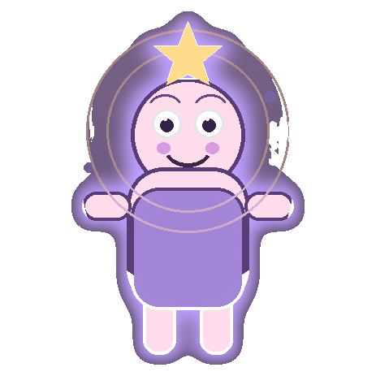

Heute · Impuls
—
PraxisPraxis
Dein Altar — warm, still, zum Ankommen.

Dein kleiner Begleiter am Pfad — neugierig, weich, ohne Grusel.
7,83 Hz ruhig
Spektro pausiert — ruhig weiterüben
Vertrauen & Ethik Daten bleiben auf diesem Gerät
In der Stille genügt eines.
Intention, Atem, Erdung — ein klarer Einstieg, ohne Hektik.
Mikro-Praxis für heute.
Heute · Mo–So
Eine Zeile — lokal, nur heute. Optional mit 369 verknüpfen.
Noch keine Intentionen diese Woche — ein Satz genügt.
Ethischer Satz · 3 / 6 / 9 — lokal gespeichert
Magst du UNIVERSUM weitergeben? Teilen, Link kopieren oder auf den Homescreen — alles bleibt lokal, ohne Konto.
Vertrauen: alles bleibt auf diesem Gerät — ohne Konto, ohne Online-Kreis.
Europa/Zürich · 47,37 / 8,54
Gregorianisch · Mond · nur pfadrelevante Feste
Acht Feste als Atem des Jahres — nicht nur Daten. Tippen öffnet den Tag.
Tageskreis · Planetenstunde · klarer Fokus
Positionen und Planetenstunden sind Näherungen für die Praxis — kein professionelles Ephemeris.
Gut für —
Kommende Planetenstunden ab jetzt (Näherung)
Lokal für Sonnenzeiten und Stunden — ohne Konto, nur auf diesem Gerät
Optional — volle Live-Ansicht auch am Altar unter Mehr. Kein Sensor am Handy.
Spektrogramm derzeit nicht erreichbar.
Lokal · 7,83-Hz-Puls
Update: —
Werkzeug · Eigene · Geführt (optional)
Ein Handy kann keine Geister messen. Praxis vor Spektakel.
🛠️ Pfad-Werkzeug
✒️ Sigil
PfadGalerie: nur Hash + Glyph — nie Klartext der Absicht.
Noch keine Glyphs — zeichne eines und lege es ab.
🃏 Feldkarten
PfadEine Karte für heute — bis Mitternacht gesiegelt. Daten bleiben lokal.
Ziehe mit Absicht — eine Karte oder die Tageskarte. Fragen, nicht befehlen.
Optional — Werkzeug bleibt vorn.
Stille · optional Streak
4/6 oder Box — ohne volles Ritual
Pfad-Rituale
Speichere bis zu drei eigene Vorlagen — laden füllt das Formular unten.
Speichere bis zu drei Schablonen aus dem Formular — dein Tempo, deine Ethik.
Lokal · Notiz & Eintrag · Fotos bleiben auf dem Gerät · Export
Buch = volles Backup (universum-magie-buch.json; alte universum-buch.json geht weiterhin beim Import). Zusammenfassung = Klartext für Coaches, ohne volle Eintragstexte.
Ein stiller Blick auf deine Praxis — nur lokal, ohne Vergleich.
Diese Woche noch still — ein Atem oder Ritual genügt.
Dezente Einträge, wenn Ritual, 369 oder Atem abgeschlossen — jederzeit löschbar.
Noch still — Praxis erscheint hier nach dem ersten Mal.
Kurzer Zettel im Magie-Buch. Später: «Als Eintrag» für Stimmung, Foto und Filter.
Fotos bleiben auf diesem Gerät, kein Upload.
📦 ZIP und 🖨️ PDF bleiben auf dem Gerät — kein Cloud-Upload. Vollbackup: Magie-Buch, eigenes Lexikon, Favoriten, Schlüssel-Settings (ohne Geheimnisse).
Lexikon · Hauspraxis-Symbolik · Pfad
Name tippen für Erklärung und Aktionen.
Symbolik / Hauspraxis — kein medizinischer Rat, Maß und Einwilligung.
Lokal auf diesem Gerät — Kategorie wählen, Name und Erklärung. Eigene Einträge erscheinen immer (auch bei «Nur mein Pfad»).
Kurze Einladung mit Warum — Symbolik für die Haltung, kein medizinischer Rat.
Hauspraxis — kein Heilversprechen.
Ein Handy kann keine Geister messen. Symbolik dient der Haltung, nicht der Diagnose. Bezüge nur mit Einwilligung — kein Schaden, nichts Illegales.
Pfadbezogene Mini-Arbeiten — ethisch, ohne Spektakel.
Nur auf diesem Gerät · kein Upload